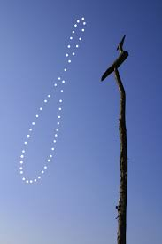
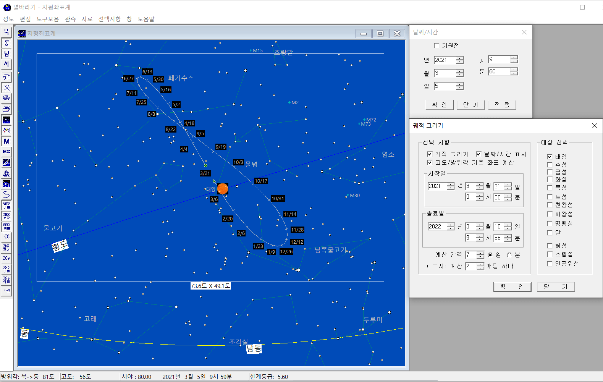
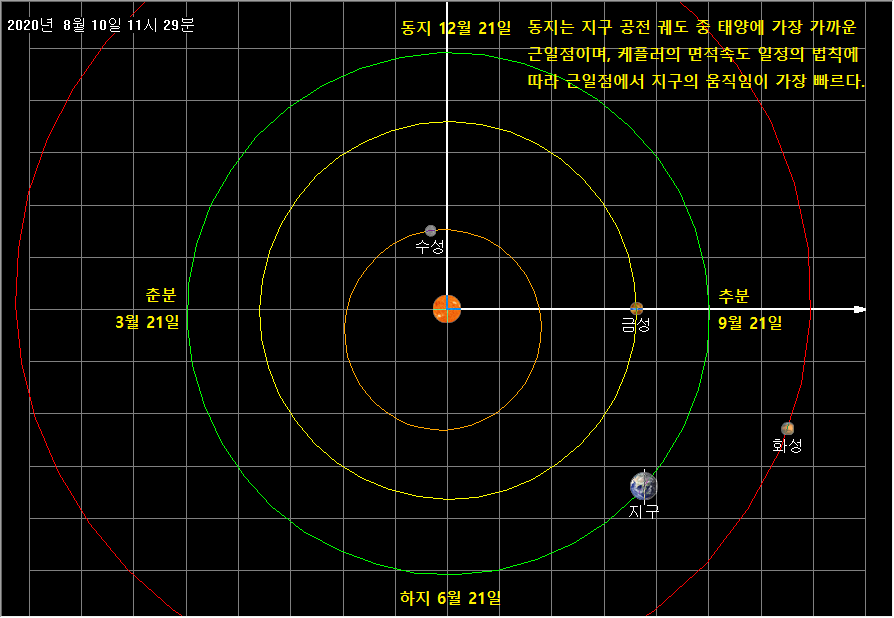

태양의 무한궤도 아날렘마
1년 동안 일주일에 한 번씩 같은 시각 같은 장소에서 태양의 위치를 기록하면 8자 모양의 궤적을 얻을 수 있다. 이것을 아날렘마라고 한다. 이런 궤적이 나타나는 주된 이유는 지구의 자전축이 23.5도 기울어져 있기 때문이다. 계절에 따라 해 뜨는 방위각 및 태양의 고도가 바뀌는 것을 생각하면 이해가 빠른 것이다.
|  |  |
| 사진 출처: 천문연구원 |
- 사진을 찍는 시각에 따라 8자의 기울기가 결정된다. 12시에 촬영하면 8자가 수직으로 선 모양이고, 오전에 촬영하면 왼쪽으로 오후에는 오른쪽으로 기울어진다. 왼쪽 사진에서 8자 모양이 수직에서 오른쪽으로 살짝 기울어진 것으로 보아 오후 1시에 촬영된 것이고, 오른쪽 별바라기 화면은 오전 10시 기준이다.
- 아날렘마를 이해애야 정확한 해시계를 만들 수 있다. 장영실의 앙부일구도 태양의 움직임을 다 고려해서 만들었을 것으로 추축된다.
- 태양의 움직임을 보면 24절기를 이해하는데 도움이 된다. 8자의 맨 아래쪽은 동지에 해당되고, 맨 위쪽은 하지에 해당된다. 춘분과 추분은 8자의 교차점보다 조금 아래에 위치한다.
- 하지 근처에서 태양의 움직임이 느리고, 동지 근처에서 태양의 움직이 빠른 것도 눈여겨 보자(오른쪽 그림 참조). 케플러 제2법칙 면적 속도 일정의 법칙에 따른 결과이다.
- 아래 그림을 보면 지구가 타원 궤도이고 동지 때에 지구가 태양에 가장 가까운 것을 확인할 수 있다. 하지와 비교해서 조금 가깝다. 태양에 가까울수록 이동 속도는 빨라진다.
|  |
| 관찰자 시점: 황경 270도, 황위 90 |
별바라기 활용법
별바라기에서 아날렘마를 확인해 보자.
- 날짜/시간을 2021년 3월 5일 10시 0분으로 맞춘다.
- [도구모음][궤적 그리기...] 메뉴를 선택한다.
- 궤적 그리기 윈도에서 위 그림처럼 값을 설정한 후 '확인'버튼을 누른다.
- 아날렘마가 잘 보이도록 화면을 상하좌우로 움직인다. 또한 가로 너비도 적당히 줄여준다.
- 궤적에 나타난 날짜를 클릭 & 드래그하여 예쁘게 보이도록 조정한다.

- [도구모음][망원경/카메라의 시야 확인...] 메뉴를 선택한다.
- '디지털카메라' 탭을 선택하고, 'Full Frame', '28mm'를 선택한다.
- [자료][태양계...]메뉴를 선택하고 '태양'만 보이도록 설정하여, 다른 행성들이 혼란스럽게 보이지 않도록 한다.
기타 사항
- 샘플성도: 70.아날렘마_2021년.sky
- 70.아날렘마_2021년.bmp
- 궤적그리기 윈도에서 시작일/종료일의 시각을 12시, 15시로 변경해 보며, 태양의 무한궤도가 어떻게 변하는지 확인해 보자.
- 실제 아날렘마를 사진으로 남기는 것은 매우 고난도의 작업이다. 날씨도 도와줘야 하고 카메라도 고정되어야 하고 주기적으로 같은 시각을 맞추어야 하는 등 생각할 것이 많다.
별바라기 홈 최종 변경: 2020년 05월 31일